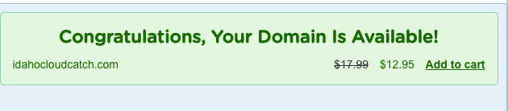

Site Name: Cloud Catch
For Idahoans fishing the clouds for information
Site Purpose:
The purpose of this site is to provide a seemless user experience. Information will be displayed in a way that is easy to read and makes visual sense to the user. Information will not be cluttered or encumber the user with unnecessary information. All weather and city articles on this site will be be realiable and accurate and will be easily accessible no matter the viewports or device used.
Domain Name:
idahocloudcatch.com
